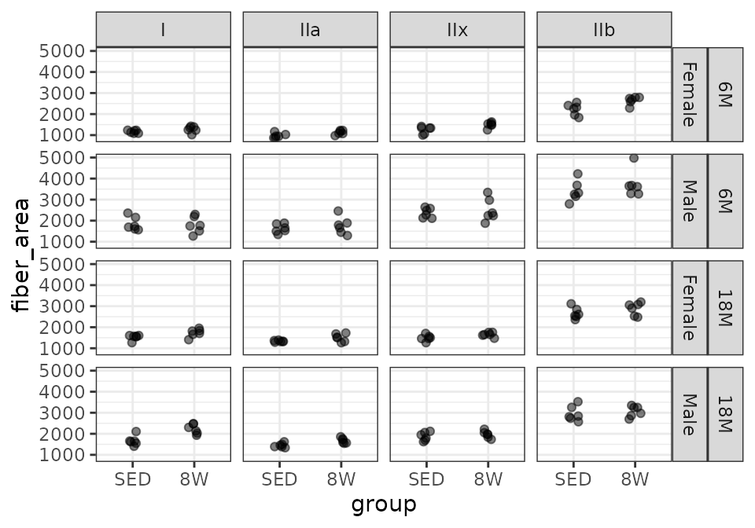
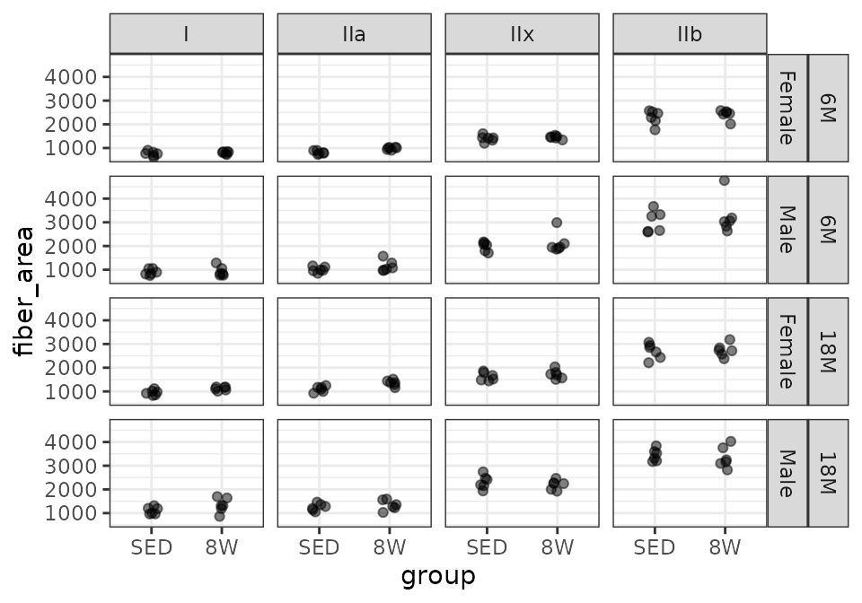

vignettes/FIBER_AREA_STATS.Rmd
FIBER_AREA_STATS.Rmd
# Required packages
library(MotrpacRatTrainingPhysiologyData)
library(ggplot2)
library(MASS)
library(dplyr)
library(tibble)
library(tidyr)
library(purrr)
library(emmeans)
library(nlme)
library(stats)
theme_set(theme_bw()) # base plot themeWe will look at plots of mean fiber area.
# Plot points
FIBER_TYPES %>%
filter(muscle == "MG") %>%
ggplot(aes(x = group, y = fiber_area)) +
geom_point(na.rm = TRUE, alpha = 0.5,
position = position_jitter(width = 0.1, height = 0)) +
facet_grid(age + sex ~ type)
# Plot points
FIBER_TYPES %>%
filter(muscle == "LG") %>%
ggplot(aes(x = group, y = fiber_area)) +
geom_point(na.rm = TRUE, alpha = 0.5,
position = position_jitter(width = 0.1, height = 0)) +
facet_grid(age + sex ~ type)
# Plot points
FIBER_TYPES %>%
filter(muscle == "PL") %>%
ggplot(aes(x = group, y = fiber_area)) +
geom_point(na.rm = TRUE, alpha = 0.5,
position = position_jitter(width = 0.1, height = 0)) +
facet_grid(age + sex ~ type)
# Plot points
FIBER_TYPES %>%
filter(muscle == "SOL") %>%
ggplot(aes(x = group, y = fiber_area)) +
geom_point(na.rm = TRUE, alpha = 0.5,
position = position_jitter(width = 0.1, height = 0)) +
facet_grid(age + sex ~ type)We will check the mean-variance relationship.
mv <- FIBER_TYPES %>%
group_by(sex, group, age, muscle, type) %>%
summarise(mn = mean(fiber_area, na.rm = TRUE),
vr = var(fiber_area, na.rm = TRUE))
fit.mv <- lm(log(vr) ~ log(mn), data = mv)
coef(fit.mv)
#> (Intercept) log(mn)
#> -4.451949 1.982954
plot(log(vr) ~ log(mn), data = mv, las = 1, pch = 19,
xlab = "log(group means)", ylab = "log(group variances)")
abline(coef(fit.mv), lwd = 2)The slope of the line is close to 2, which suggests a gamma
distribution or log transformation may be appropriate. Since SOL only
consists of type I and IIa fibers, we can not include an interaction
between muscle and type, since it will be
inestimable for SOL type IIb and IIx. Instead, we will create a new
muscle_type variable by concatenating muscle
and type.
FIBER_TYPES <- mutate(FIBER_TYPES, muscle_type = paste0(muscle, ".", type))
fit.area <- lme(
fixed = log(fiber_area) ~ age * sex * group * muscle_type,
random = ~ 1 | pid,
data = FIBER_TYPES,
na.action = na.exclude)
r <- resid(fit.area, scaled = TRUE, type = "pearson")
par(mfrow = c(2, 2))
# Standardized residuals vs. fitted plot
plot(x = fitted(fit.area), y = r,
ylab = "Standardized residuals", xlab = "Fitted values")
lines(loess.smooth(x = fitted(fit.area), y = r, degree = 2),
col = "red", lwd = 2)
# Scale-location plot
plot(x = fitted(fit.area), y = sqrt(abs(r)),
ylab = "sqrt(|standardized residuals|)", xlab = "Fitted values")
lines(loess.smooth(x = fitted(fit.area), y = sqrt(abs(r)), degree = 2),
col = "red", lwd = 2)
# Normal Q-Q plot
qqnorm(r); qqline(r, col = "red")
par(mfrow = c(1, 1))
# Residuals vs. predictor levels
par(mfrow = c(2, 3), mar = c(5, 3, 0.5, 0.5))
boxplot(r ~ age, data = FIBER_TYPES, ylab = "")
boxplot(r ~ group, data = FIBER_TYPES, ylab = "")
boxplot(r ~ sex, data = FIBER_TYPES, ylab = "")
boxplot(r ~ muscle, data = FIBER_TYPES, ylab = "")
boxplot(r ~ type, data = FIBER_TYPES, ylab = "")
mtext("Standardized residuals", side = 2, line = -1, outer = TRUE)
par(mfrow = c(1, 1), mar = c(5, 4, 4, 2))The diagnostic plots look fine. We will try to simplify the model.
anova(fit.area)
#> numDF denDF F-value p-value
#> (Intercept) 1 518 594342.4 <.0001
#> age 1 40 19.9 0.0001
#> sex 1 40 207.9 <.0001
#> group 1 40 15.2 0.0004
#> muscle_type 13 518 632.1 <.0001
#> age:sex 1 40 26.3 <.0001
#> age:group 1 40 1.5 0.2338
#> sex:group 1 40 0.5 0.5025
#> age:muscle_type 13 518 15.5 <.0001
#> sex:muscle_type 13 518 8.3 <.0001
#> group:muscle_type 13 518 1.8 0.0451
#> age:sex:group 1 40 0.8 0.3873
#> age:sex:muscle_type 13 518 7.7 <.0001
#> age:group:muscle_type 13 518 2.6 0.0017
#> sex:group:muscle_type 13 518 0.9 0.5899
#> age:sex:group:muscle_type 13 518 1.6 0.0821
fit.area <- update(fit.area, method = "ML")
fit.area.1 <- update(fit.area,
fixed = . ~ (age + sex + group + muscle_type) ^ 3 -
sex:group:muscle_type)
anova(fit.area, fit.area.1)
#> Model df AIC BIC logLik Test L.Ratio p-value
#> fit.area 1 114 -980.3958 -466.5662 604.1979
#> fit.area.1 2 88 -995.1090 -598.4686 585.5545 1 vs 2 37.28679 0.0704Removal of the 4-way interaction and the least significant 3-way interaction does not lead to a significant difference between the full and reduced models at the 0.05 level, but we will not remove any terms.
We will compare the 8W trained to the sedentary control group within each age, sex, and muscle. We will then adjust p-values across fiber types within each age, sex, and muscle group using the Holm method.
# Estimated marginal means
FIBER_AREA_EMM <- emmeans(fit.area, specs = "group",
by = c("age", "sex", "muscle_type"),
type = "response", infer = TRUE)
# Extract model info
model_df <- data.frame(response = "Mean Fiber Area",
model = paste(deparse(fit.area[["call"]]),
collapse = "")) %>%
mutate(model = gsub("(?<=[\\s])\\s*|^\\s+|\\s+$", "", model, perl = TRUE),
model_type = "lme",
fixed = sub(".*fixed = ([^,]+),.*", "\\1", model),
random = "~1 | pid") %>%
dplyr::select(-model)
FIBER_AREA_STATS <- FIBER_AREA_EMM %>%
contrast(method = "trt.vs.ctrl") %>%
summary(infer = TRUE) %>%
as.data.frame() %>%
rename(any_of(c(lower.CL = "asymp.LCL",
upper.CL = "asymp.UCL"))) %>%
separate_wider_delim(cols = muscle_type, delim = ".",
names = c("muscle", "type")) %>%
mutate(muscle = factor(muscle, levels = c("LG", "MG", "PL", "SOL")),
type = factor(type, levels = c("I", "IIa", "IIx", "IIb"))) %>%
# Holm-adjust p-values across fiber types
group_by(age, sex, muscle) %>%
mutate(p.adj = p.adjust(p.value, method = "holm"),
signif = p.adj < 0.05) %>%
ungroup() %>%
pivot_longer(cols = ratio,
names_to = "estimate_type",
values_to = "estimate",
values_drop_na = TRUE) %>%
pivot_longer(cols = contains(".ratio"),
names_to = "statistic_type",
values_to = "statistic",
values_drop_na = TRUE) %>%
mutate(response = "Mean Fiber Area",
statistic_type = sub("\\.ratio", "", statistic_type)) %>%
left_join(model_df, by = "response") %>%
dplyr::select(response, age, sex, muscle, type, contrast, estimate_type, null,
estimate, SE, lower.CL, upper.CL, statistic_type, statistic,
df, p.value, p.adj, signif, model_type, fixed, random,
everything()) %>%
arrange(response, age, sex, muscle, type) %>%
as.data.frame()See ?FIBER_AREA_STATS for details.
print.data.frame(head(FIBER_AREA_STATS))
#> response age sex muscle type contrast estimate_type null estimate
#> 1 Mean Fiber Area 6M Female LG I 8W / SED ratio 1 0.9858807
#> 2 Mean Fiber Area 6M Female LG IIa 8W / SED ratio 1 1.0077985
#> 3 Mean Fiber Area 6M Female LG IIx 8W / SED ratio 1 1.0069759
#> 4 Mean Fiber Area 6M Female LG IIb 8W / SED ratio 1 0.9865055
#> 5 Mean Fiber Area 6M Female MG I 8W / SED ratio 1 1.0947372
#> 6 Mean Fiber Area 6M Female MG IIa 8W / SED ratio 1 1.1627512
#> SE lower.CL upper.CL statistic_type statistic df p.value
#> 1 0.06716298 0.8590696 1.131411 t -0.2087328 40 0.8357162
#> 2 0.06865613 0.8781682 1.156564 t 0.1140301 40 0.9097843
#> 3 0.06860009 0.8774514 1.155620 t 0.1020439 40 0.9192317
#> 4 0.06720554 0.8596140 1.132128 t -0.1994340 40 0.8429336
#> 5 0.07457881 0.9539241 1.256336 t 1.3286536 40 0.1914926
#> 6 0.07921226 1.0131897 1.334390 t 2.2134207 40 0.0326355
#> p.adj signif model_type
#> 1 1.00000000 FALSE lme
#> 2 1.00000000 FALSE lme
#> 3 1.00000000 FALSE lme
#> 4 1.00000000 FALSE lme
#> 5 0.19149264 FALSE lme
#> 6 0.06527099 FALSE lme
#> fixed random
#> 1 log(fiber_area) ~ age * sex * group * muscle_type ~1 | pid
#> 2 log(fiber_area) ~ age * sex * group * muscle_type ~1 | pid
#> 3 log(fiber_area) ~ age * sex * group * muscle_type ~1 | pid
#> 4 log(fiber_area) ~ age * sex * group * muscle_type ~1 | pid
#> 5 log(fiber_area) ~ age * sex * group * muscle_type ~1 | pid
#> 6 log(fiber_area) ~ age * sex * group * muscle_type ~1 | pid
sessionInfo()
#> R version 4.3.1 (2023-06-16)
#> Platform: x86_64-pc-linux-gnu (64-bit)
#> Running under: Ubuntu 22.04.3 LTS
#>
#> Matrix products: default
#> BLAS: /usr/lib/x86_64-linux-gnu/openblas-pthread/libblas.so.3
#> LAPACK: /usr/lib/x86_64-linux-gnu/openblas-pthread/libopenblasp-r0.3.20.so; LAPACK version 3.10.0
#>
#> locale:
#> [1] LC_CTYPE=C.UTF-8 LC_NUMERIC=C LC_TIME=C.UTF-8
#> [4] LC_COLLATE=C.UTF-8 LC_MONETARY=C.UTF-8 LC_MESSAGES=C.UTF-8
#> [7] LC_PAPER=C.UTF-8 LC_NAME=C LC_ADDRESS=C
#> [10] LC_TELEPHONE=C LC_MEASUREMENT=C.UTF-8 LC_IDENTIFICATION=C
#>
#> time zone: UTC
#> tzcode source: system (glibc)
#>
#> attached base packages:
#> [1] stats graphics grDevices utils datasets methods base
#>
#> other attached packages:
#> [1] nlme_3.1-162
#> [2] emmeans_1.8.9
#> [3] purrr_1.0.2
#> [4] tidyr_1.3.0
#> [5] tibble_3.2.1
#> [6] dplyr_1.1.3
#> [7] MASS_7.3-60
#> [8] ggplot2_3.4.4
#> [9] MotrpacRatTrainingPhysiologyData_0.1.0
#>
#> loaded via a namespace (and not attached):
#> [1] sass_0.4.7 utf8_1.2.4 generics_0.1.3 rstatix_0.7.2
#> [5] lattice_0.21-8 stringi_1.7.12 digest_0.6.33 magrittr_2.0.3
#> [9] estimability_1.4.1 evaluate_0.22 grid_4.3.1 mvtnorm_1.2-3
#> [13] fastmap_1.1.1 rprojroot_2.0.3 jsonlite_1.8.7 backports_1.4.1
#> [17] fansi_1.0.5 scales_1.2.1 textshaping_0.3.7 jquerylib_0.1.4
#> [21] abind_1.4-5 cli_3.6.1 rlang_1.1.1 munsell_0.5.0
#> [25] withr_2.5.1 cachem_1.0.8 yaml_2.3.7 ggbeeswarm_0.7.2
#> [29] tools_4.3.1 memoise_2.0.1 ggsignif_0.6.4 colorspace_2.1-0
#> [33] ggpubr_0.6.0 broom_1.0.5 vctrs_0.6.4 R6_2.5.1
#> [37] lifecycle_1.0.3 stringr_1.5.0 car_3.1-2 fs_1.6.3
#> [41] vipor_0.4.5 ragg_1.2.6 pkgconfig_2.0.3 beeswarm_0.4.0
#> [45] desc_1.4.2 pkgdown_2.0.7 pillar_1.9.0 bslib_0.5.1
#> [49] gtable_0.3.4 glue_1.6.2 systemfonts_1.0.5 xfun_0.40
#> [53] tidyselect_1.2.0 knitr_1.44 farver_2.1.1 htmltools_0.5.6.1
#> [57] labeling_0.4.3 carData_3.0-5 rmarkdown_2.25 compiler_4.3.1